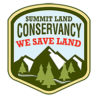
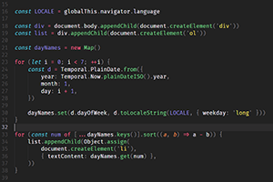

Elsa Ebenhoch
Education Portfolio
Why Web Design?
I chose web design as my major because it allows me to be creative. I love the freedom to express myself through visually appealing and user-friendly designs while ensuring functionality and accessibility. Every project presents unique challenges, and finding innovative solutions gives me a sense of accomplishment and a chance to improve. Web design is a perfect blend of art and logic, letting me create experiences that are not only aesthetically pleasing but also impactful. It excites me to know that my work can connect people and share ideas.
Education
Web Design and Development
I am currently in my second year of studying Web Design and Development with an emphasis in interaction and design at Utah Valley University. So far, I have been learning about both interaction design and web and app development. It's very important to enter the web design field with an understanding of how both the design and development side work.
Career Goals
Internship
I want a web design internship because it offers an invaluable opportunity to apply the skills I’ve learned in a real-world setting while gaining practical experience in the industry. As someone passionate about creating visually engaging and user-friendly designs, an internship allows me to collaborate with professionals, learn industry best practices, and improve my problem-solving abilities by working on actual projects. I’m eager to contribute my creativity and technical knowledge to a team while continuing to grow as a designer.
Freelance
I want to do freelance work as a web designer because it offers the freedom to work on diverse projects while allowing me to manage my own schedule. Freelancing gives me the opportunity to collaborate with clients from various industries, which not only enhances my creativity but also helps me develop a broader skill set. I’m excited about the challenge of building unique, user-focused designs tailored to each client’s needs. Freelancing aligns perfectly with my passion for web design and my desire for flexibility and independence in my career.
My Work
Website Redesign
I redesigned Summit Land Conservancy's website to be more visually appealing and function smoother. My goal was to make it more visually compelling, while making it more organized to improve user experience.
SEE PROTOTYPE
National Parks Website
This was my final project for my class where I learned the basics of coding. I was able to apply everything I learned into a final site, utilizing web design elements to create an appealing and functioning site.
SEE WEBSITE
Scripting Essentials
This collection of work is from a class where I started to learn how to implement JavaScript into my websites. JavaScript adds interactivity to websites, making it's capabilites very versatile, so it was fun to learn.
SEE WEBSITE
Contact Me
Fill out this form to get in touch with me
ebelsa7@gmail.com
Social